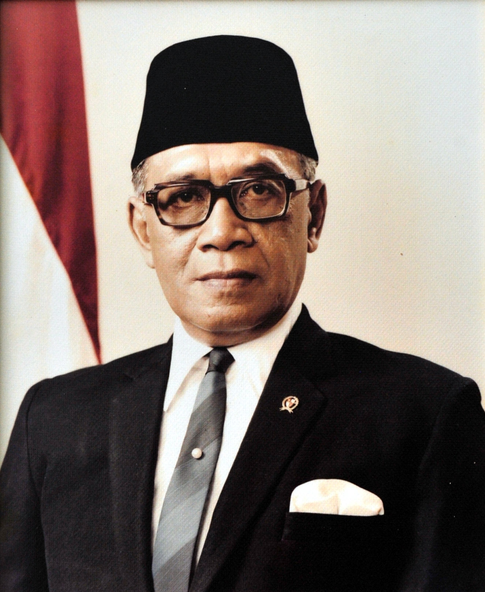
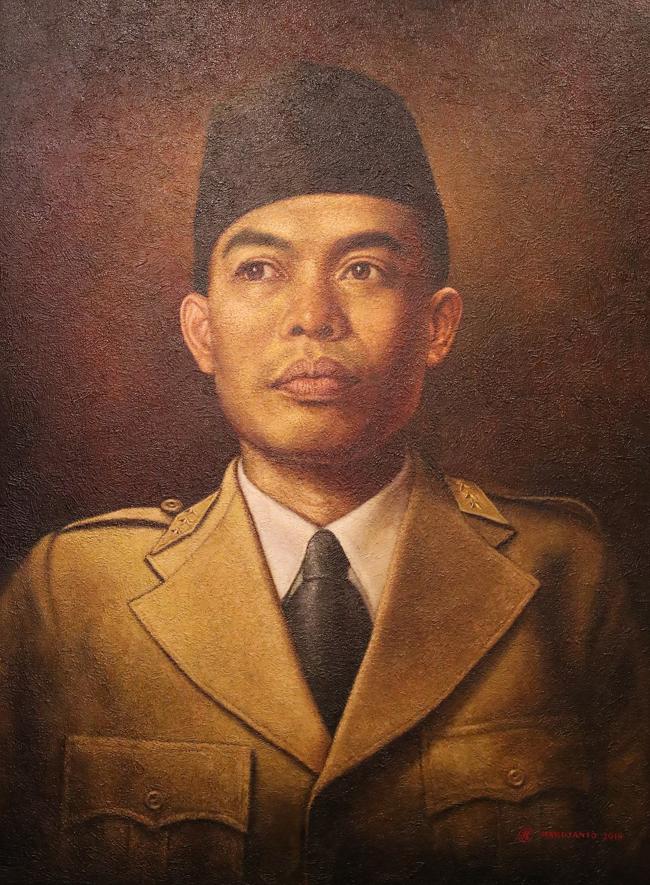
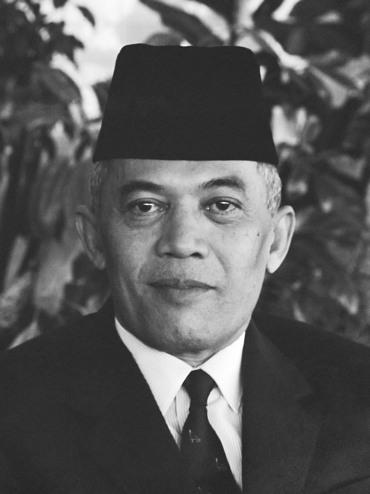

4.1.1 SOEKARNO (1901-1970)

- Lahir di Blitar, 6 Juni 1901
- Anak dari Raden Soekemi Sosrodihardjo dan Ida Nyoman Rai
- Bersekolah di EIS-ELS-HBS-THS-ITB
- Dimakamkan di Blitar
- Pada 1927, ia mendirikan PNI yang membuatnya ditangkap oleh pemerintah kolonial Belanda dan dipenjara selama 4 tahun. Dibebaskan pada 1931.
- Ia bergabung Partindo tetapi ditangkap dan dibuang ke Ende.
- Pada masa pendudukan Jepang, Ia memimpin organisasi Putera dan menjadi ketua Cuo Sangi In.
- Pada 17 Agustus 1945, Ia memproklamasikan kemerdekaan Indonesia bersama Moh. Hatta.
- Beliau menjadi presiden RI pertama.
- Memiliki tiga istri, Fatmawati, Hartini, dan Ratna Sari Dewi (Naoko Nemoto) dan delapan anak yaitu Guntur, Megawati, Rachmawati, Sukmawati, Guruh, Taufan, Bayu, dan Kartika.
4.1.2 MOH HATTA (1902-1980)

- Lahir di Bukit Tinggi, 12 Agustus 1902
- Bersekolah di Fort de Kock-ELS Padang-MULO-Prins Hendrik School-Handels Hooge School
- Dimakamkan di TPU Tanah Kusir Jakarta
- Bergabung menjadi anggota perkumpulan Jong Sumatra pada 1916
- Menjadi ketua Perhimpunan Indonesia karena itu ditangkap pada 1927 dan bebas setahun setelah
- 1932 memimpin PNI tetapi ditangkap dan dibuang ke Papua
- Pada kedudukan Jepang, memimpin kantor Putera
- Bersama Soekarno memroklamasikan kemerdekaan.
- Memimpin delegasi Indonesia di KMB
- Undur diri sebagai wakil presiden pada 1956
4.1.3 MOHAMMAD YAMIN (1903-1962)

- Lahir di Talawi, 24 Agustus 1903
- Bersekolah di HIS-AMS-Rechtskundige Hooge School-bergelar Meester in de Rechten
- Dimakamkan di Talawi
- Aktif di Jong Sumatra
- Berperan menyusun ikrar Sumpah Pemuda
- Terpilih menjadi anggota BPUPKI
- Diangkat menjadi anggota KNIP dan memegang berbagai jabatan negara penting
- Dikenal sebagai sastrawan dan ilmuwan.
4.1.4 SULTAN HAMENGKUBUWONO IX (1912-1988)

- Lahir di Yogyakarta, 12 April 1912
- Bersekolah di ELS-MULO-AMS-Rijkuniversiteit Leiden
- Dimakamkan di Imogiri
- Ketika terjadinya proklamasi kemerdekaan Indonesia, menyatakan Yogyakarta bergabung dengan RI
- Menyumbangkan kekayaan sebesar 6 juta gulden ketika RI mengalami perekonomian buruk.
- Dipercaya menduduki berbagai jabatan penting negara
4.1.5 PANGLIMA BESAR SOEDIRMAN (1916-1950)

- Lahir di Purbalingga, 24 Januari 1916
- Bersekolah di HIS-Taman Dewasa Taman Siswa-HIK
- Meninggal di Magelang
- Mengajar di SD Muhammadiyah di Cilacap dan aktif dalam organisasi pramuka
- Mengikuti PETA di Bogor
- Diangkat menjadi komandan batalion di Banyumas
- Melakukan pemberontakan dengan rekan tentara dan diasingkan ke Bogor, tapi melarikan diri ketika Indonesia merdeka
- Ditetapkan sebagai panglima besar TKR dengan pangkat jenderal. Berkembang menjadi TNI karena saking giatnya.
- Memerintahkan tentara Republik ke luar kota untuk bergerilya.
4.1.6 ABDUL HARIS NASUTION (1918-2000)

- Lahir di Sumatera Utara, 3 Desember 1918
- Bersekolah di HIS-HIK-AMS
- Meninggal di Jakarta
- Ia menjadi guru, tetapi berhenti dan masuk Akademi Militer di Bandung.
- Setelah kemerdekaan RI, Nasution diangkat menjadi Komandan Divisi III Tentara Keamanan Rakyat Bandung.
- Di Yogyakarta, Ia diangkat sebagai Wakil Panglima Besar MBAP. Berikutnya menjadi Panglima Komando Jawa hingga 1949.
- Pada 27 Des 1949, diangkat menjadi KSAD
- Sekitar 1965, diculik bersama 6 orang jenderal ketika G30S/PKI. Berhasil lolos namun putrinya tertembak meninggal.
- Setelah kejadian G30S/PKI, beliau memperoleh jabatan baru sebagai ketua MPRS